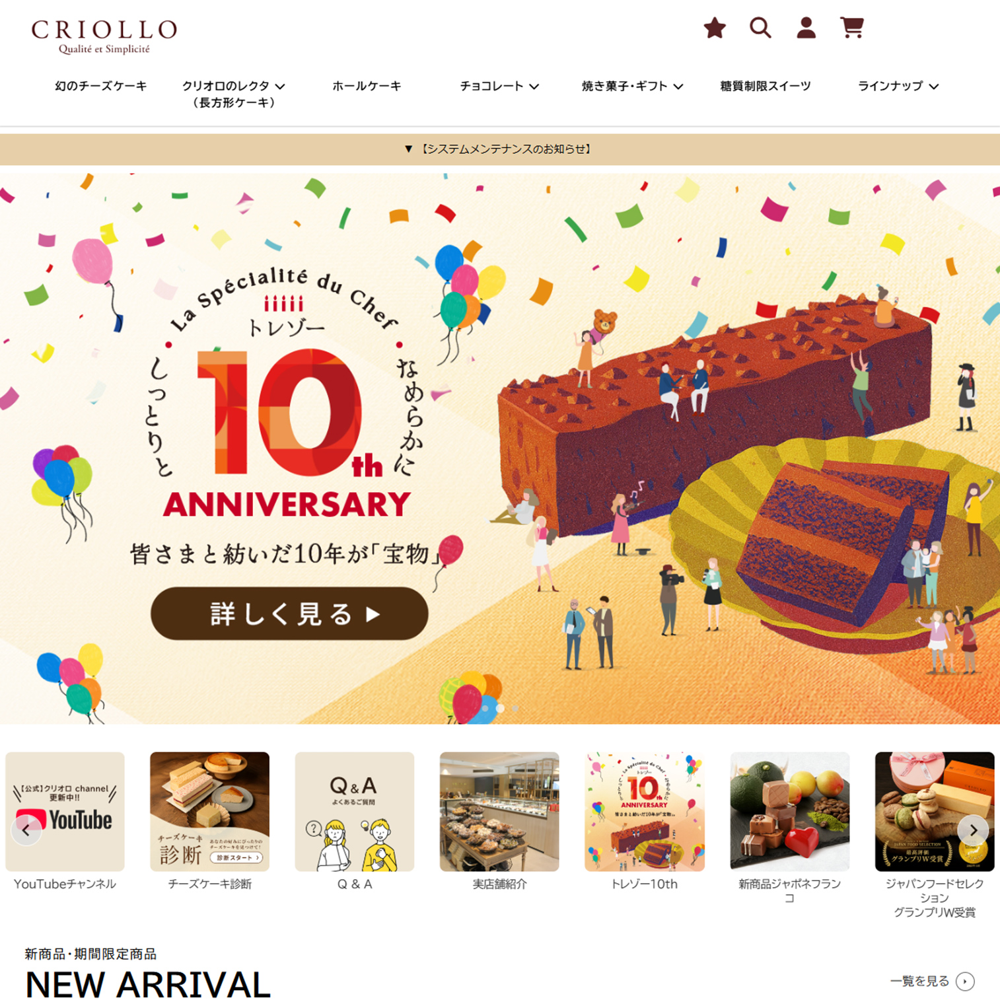
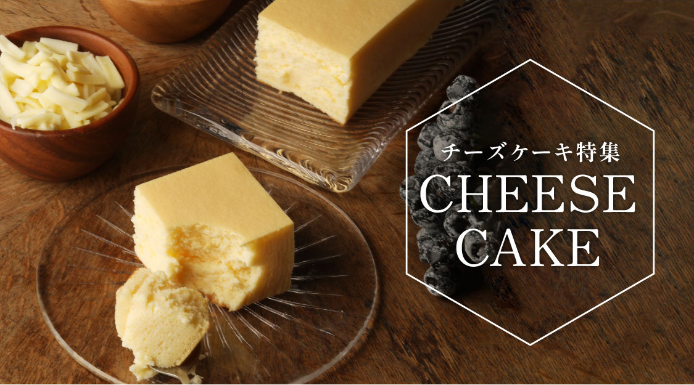
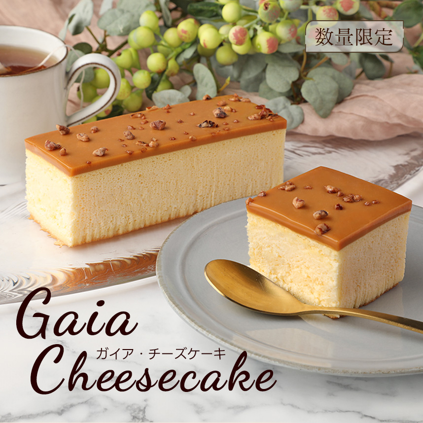
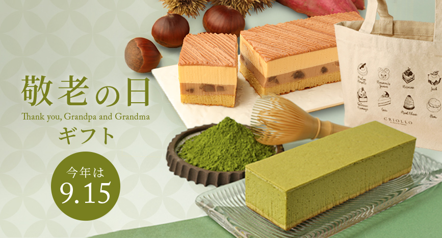

01 / INFORMATION / CODING
洋菓子ECサイトのリニューアル
上長と相談しながら必要な要素を整理。ワイヤーフレーム作成から静的HTML制作、ショップサーブのテスト環境への組み込みまで担当。
担当範囲・工夫を見るWEB / EC DESIGNER — MAKI GOTO
商品画像・LP・バナーの制作から、
HTML/CSSによる実装、ECサイトの改修・更新まで。
依頼の意図を確認し、見る人の分かりやすさと、
運用する人の使いやすさを考えて制作します。
洋菓子店ECサイトでの制作業務：2021年4月〜現在
Design & implementation
制作物とともに、担当範囲や工夫をご紹介します。

上長と相談しながら必要な要素を整理。ワイヤーフレーム作成から静的HTML制作、ショップサーブのテスト環境への組み込みまで担当。
担当範囲・工夫を見る


ECサイトのリニューアルで担当した流れ
EC店長からの依頼を受け、クリエイティブチームの上長と相談しながら進めました。
ワイヤーフレームを作成し、掲載する情報や必要な要素を精査しました。
コーディングを中心に担当。アイコンやバナーなど、必要な画像も制作しました。
ショップサーブのテスト環境へ組み込み、運用する環境に合わせて形にしました。
商品画像のレタッチ、商品説明画像、販促バナー、特集LP、一部コピーの制作。
Photoshop / Illustrator
静的ページの制作、レスポンシブ対応、既存ページの修正。タグの意味とシンプルな構造を意識しています。
HTML / CSS / Visual Studio Code
ワイヤーフレームの作成、ショップサーブへの組み込み、商品ページ・メルマガの制作、WordPressでの更新。
ショップサーブ / WordPress
Maki Goto / Web・ECデザイナー
制作と日々の更新、
両方の視点を大切にしています。
広告代理店、人材紹介サービスのWeb運営を経て、2021年4月から洋菓子店のECサイト制作に携わっています。
商品画像のレタッチやページ制作、コピー、メルマガに加え、サイト改修にも取り組んでいます。依頼の意図を確認し、必要な情報を整理して形にすることを大切にしています。
広告代理店（2005年入社）
広告進行管理を経て制作部へ。バナー、LP、自社サイト更新、コンテンツ企画を担当。
人材紹介サービス
自社サイトの運営・更新、イベント用印刷物の制作。
洋菓子店ECサイト（2021年4月〜現在）
パート勤務。商品ページ、画像、メルマガ、サイト改修を担当。
採用に関するご連絡は、応募書類に記載の連絡先へお願いいたします。